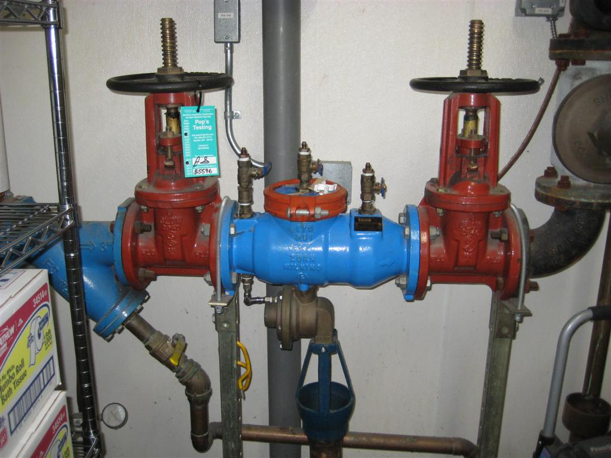

Services Offered
Testing
Backflow prevention devices, like most other equipment, need to be tested to make sure they are working properly. The state of Georgia requires that backflow prevention devices be tested annually.
Backflow Testing & Installation, LLC will perform these tests on existing devices. We also file paperwork regarding the test results with the appropriate government agency.
Installation
We install several different types of backflow prevention devices on commercial and residential properties. The devices may be installed on irrigation systems, indoor piping, or fire sprinkler systems.
Repair
We service all major brands and types of backflow prevention devices.
